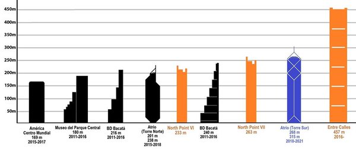
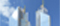
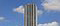
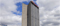
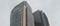
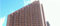
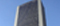

| IMÁGEN EDIFICIO | NOMBRE DE EDIFICIO | ALTURA EN METROS | NÚMERO DE PISOS | ESTADO ACTUAL | AÑO DE INAUGURACIÓN |
|---|---|---|---|---|---|
|  | Torres Atrio (Torre Sur) | 340m | 59 | En construcción | 2019 |
| Bd Bacatá (Torre Norte) | 240m | 67 | En acabados | 2016 | |
| Bd Bacatá (torre norte) | 204m | 56 | En acabados | 2016 | |
|  | Torre Colpatria | 196m | 50 | Construido | 1979 |
|  | Centro Comercio Internacional | 192m | 49 | Construido | 1977 |
| Torres Atrio (Torre Norte) | 180m | 43 | En construcción | 2021 | |
| Museo Parque Central | 180m | 44 | En acabados | 2016 | |
|  | Torre E (North Point) | 172m | 46 | En acabados | 2016 |
|  | Ciudadela San Martin (Torre Norte) | 171m | 44 | Construido | 1983 |
|  | Edificio Avianca | 161m | 41 | Construido | 1969 |
| Ciudadela San Martin (Torre Sur) | 154m | 40 | Construido | 1970 | |
| America Central de Negocios | 150m | 32 | En construcción | 2018 |